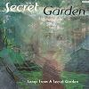

Celtic Lyrics Corner > Artists & Groups > Secret Garden > Songs From A Secret Garden > Sigma
|  | Sigma |
| Credits : | Rolf Lovland; lyrics by David Agnew |
| Appears On : | Songs From A Secret Garden ; Dreamcatcher |
| Language : | Gaeilge (Irish Gaelic) |
| Lyrics : | English Translation : |
| Bím ar thoir an comhartha | I search for the sign |
| Scaoilas m'anam saor | That will set my soul free |
| Caithfidh mo chroí a bheith glan | My heart must be pure |
| Roimh síochán theacth chúm | So that I can find peace |
| Ní leanfaidh mo Bhrón | My grief cannot last forever |
| Is béim sásta le mo ghrá | My love will be fulfilled |
| Guím comhartha chabhreoidh liom | I pray a sign will help me |
| Mé a chomhlíonadh | Be all that I can be |
| Bím ar thoir an comhartha | I search for the sign |
| Scaoilas m'anam saor | That will set my soul free |
| Caithfidh mo chroí a bheith glan | My heart must be pure |
| Roimh síochán theacth chúm | So that I can find peace |
| Sí an ghaoth do ghuth | The wind is your voice |
| Sí an bháisteach do dheora | The rain is your tears |
| Grian, do chroí ar las | Your burning heart |
| Do spiorad mo shlánú | And spirit is my salvation |